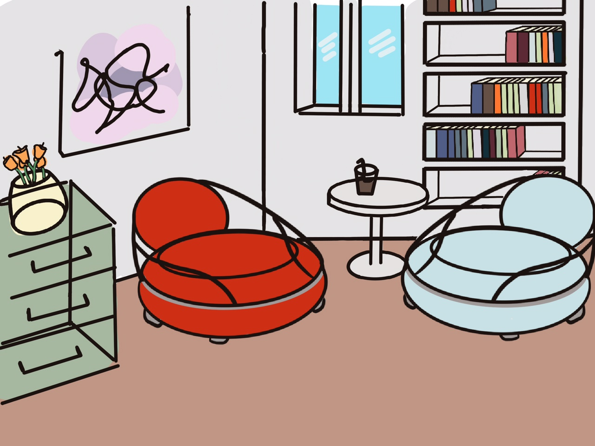

foto principal · images/babol-hero.jpg

2024
Babol
Butaca · Diseño Industrial
Sobre el proyecto
Babol nace de la idea de que sentarse puede ser un acto con carácter. Una butaca que no ocupa espacio en silencio, sino que lo define.
Formas redondeadas, estructura ligera y un tapizado que invita a quedarse. Diseñada para interiores que buscan algo entre lo funcional y lo inesperado.
foto detalle · images/babol-detalle.jpg
Ficha técnica
| Alto | 82 cm |
| Ancho | 74 cm |
| Fondo | 68 cm |
| Asiento | 44 cm del suelo |
| Peso | 12 kg |
| Acabado | Tapizado / madera lacada |
| Año | 2024 |
Materiales
- Estructura de madera de haya
- Espuma de alta densidad
- Tapizado en bouclé
- Patas en madera natural
Proceso de diseño
01
sketch · images/babol-sketch1.jpg
Sketch inicial — exploración de formas
02
maqueta · images/babol-maqueta.jpg
Maqueta a escala 1:5
03
prototipo · images/babol-proto.jpg
Prototipo final — prueba de materiales